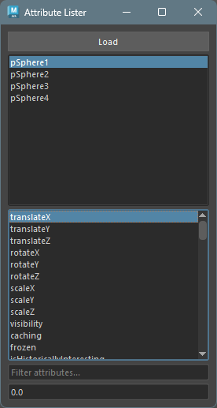
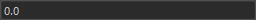
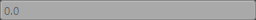
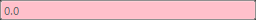
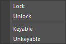
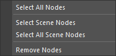

Attribute Lister
概要
ノードのアトリビュートの状態を変更するツールです。 主に、アトリビュートのロック、ノードの表示状態、アトリビュートの値を変更することができます。
起動方法
専用のメニューか、以下のコマンドでツールを起動します。
import faketools.tools.rig.attribute_lister_ui
faketools.tools.rig.attribute_lister_ui.show_ui()
使用方法
- ノードを選択します ( 複数選択可能 )。
Loadボタンを押して、選択したノードを上のリストにロードします。この時、Shiftキーを押しながら選択すると、リストに追加されます。- リストにロードされたノードを選択します ( 複数選択可能 )。選択したノードのアトリビュートが下のリストに表示されます。
- 状態を変更したいアトリビュートを選択します ( 複数選択可能 )。
- 一番下のフィールドに値を入力し、
Enterキーを押すと、選択したアトリビュートの値が変更されます。
値を変更できる状態について
値を変更できる状態は以下の通りです。
値を変更できる場合は、フィールドが以下のように表示されます。

ロックされていないアトリビュート
ロックされていないアトリビュート。選択したノードとアトリビュートがひとつでもロックされている場合、値を変更できません。 ロック状態の場合は、フィールドがグレーアウトされます。

接続がないアトリビュート
接続がないアトリビュート。選択したノードとアトリビュートがひとつでも接続がある場合、値を変更できません。
接続がある場合は、フィールドが黄色く表示されます。

同じ型のアトリビュートどおし
同じ型のアトリビュート同士。選択したノードとアトリビュートがひとつでも異なる型のアトリビュートがある場合、値を変更できません。 異なる型のアトリビュートがある場合は、フィールドが赤く表示されます。

ノードの状態を変更する
アトリビュートのリスト上で右クリックすると、ノードの状態を変更するメニューが表示されます。

それぞれ選択しているノードのアトリビュートに対して、以下の操作が可能です。
- Lock
- 選択したアトリビュートをロックします。
- Unlock
- 選択したアトリビュートのロックを解除します。
- Keyable
- 選択したアトリビュートをチャンネルボックスに表示します。
- Unkeyable
- 選択したアトリビュートをチャンネルボックスから非表示にします。
ノードリストの操作
ノードのリスト上で右クリックすると、ノードリストの操作メニューが表示されます。

- Select All Nodes
- リストにロードされたノードをリスト内ですべて選択します。
- Select Scene Nodes
- リストで選択されているノードをシーン内で選択します。
- Select All Scene Nodes
- リストにロードされているノードをシーン内ですべて選択します。
- Remove Nodes
- リストで選択されているノードをリストから削除します。